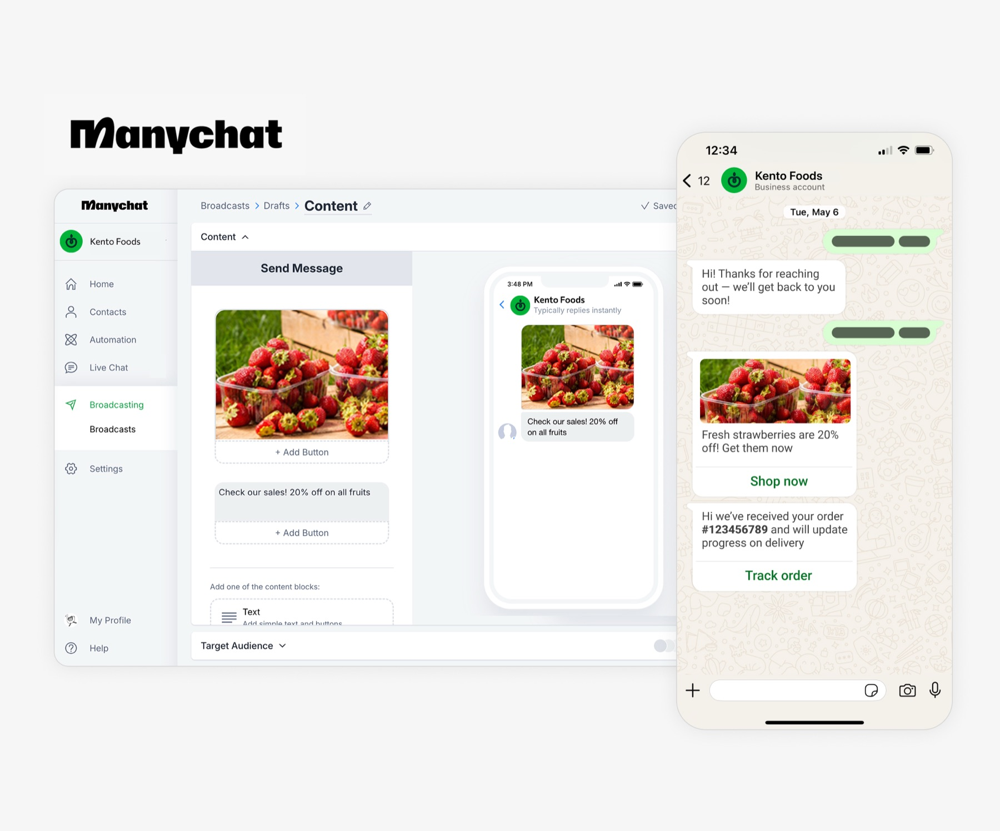
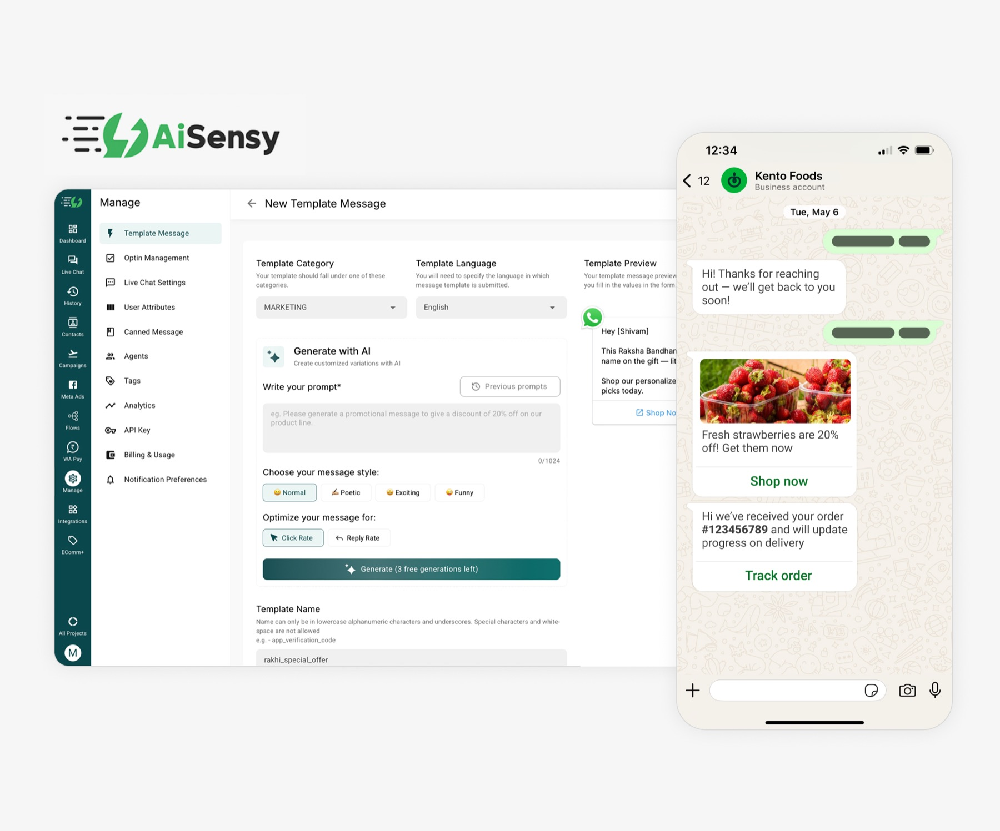
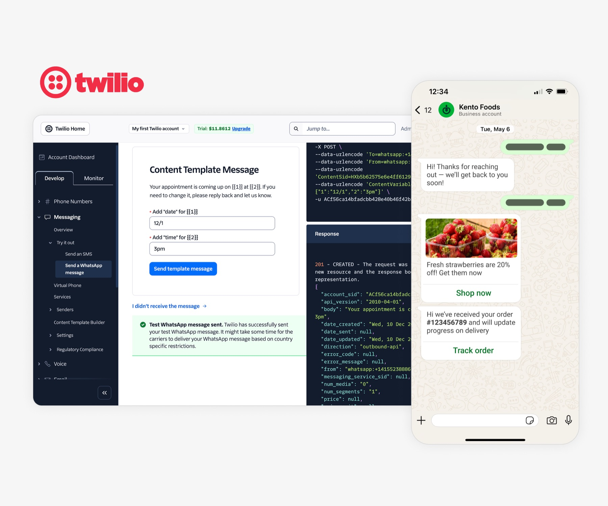
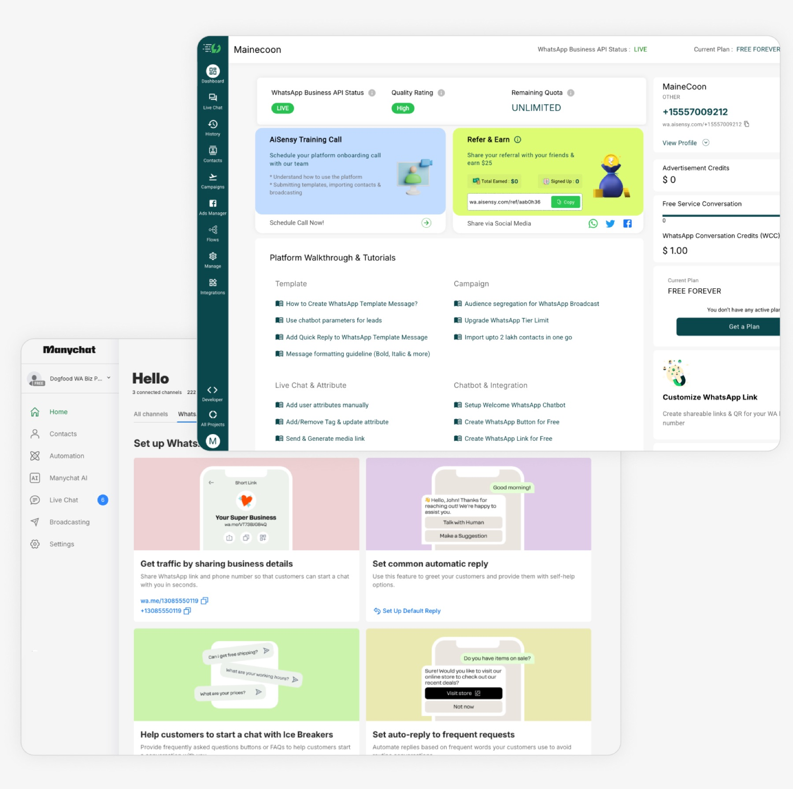
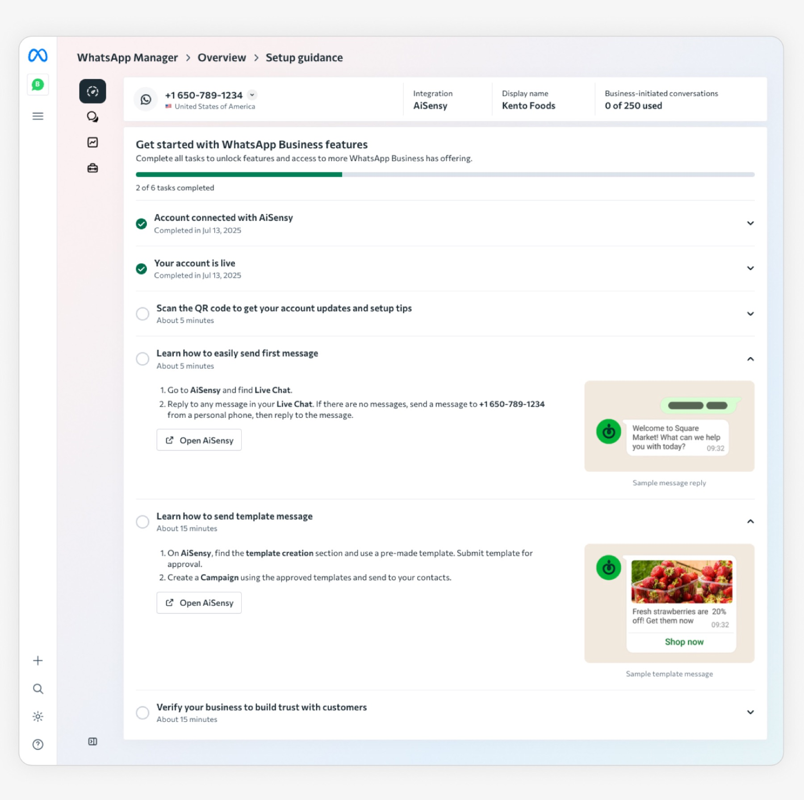
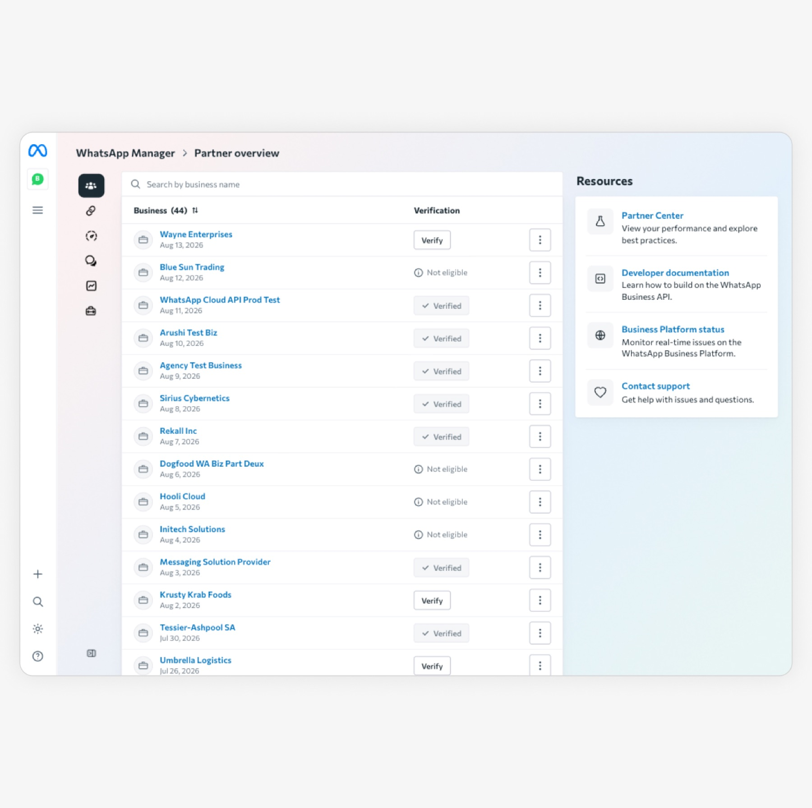
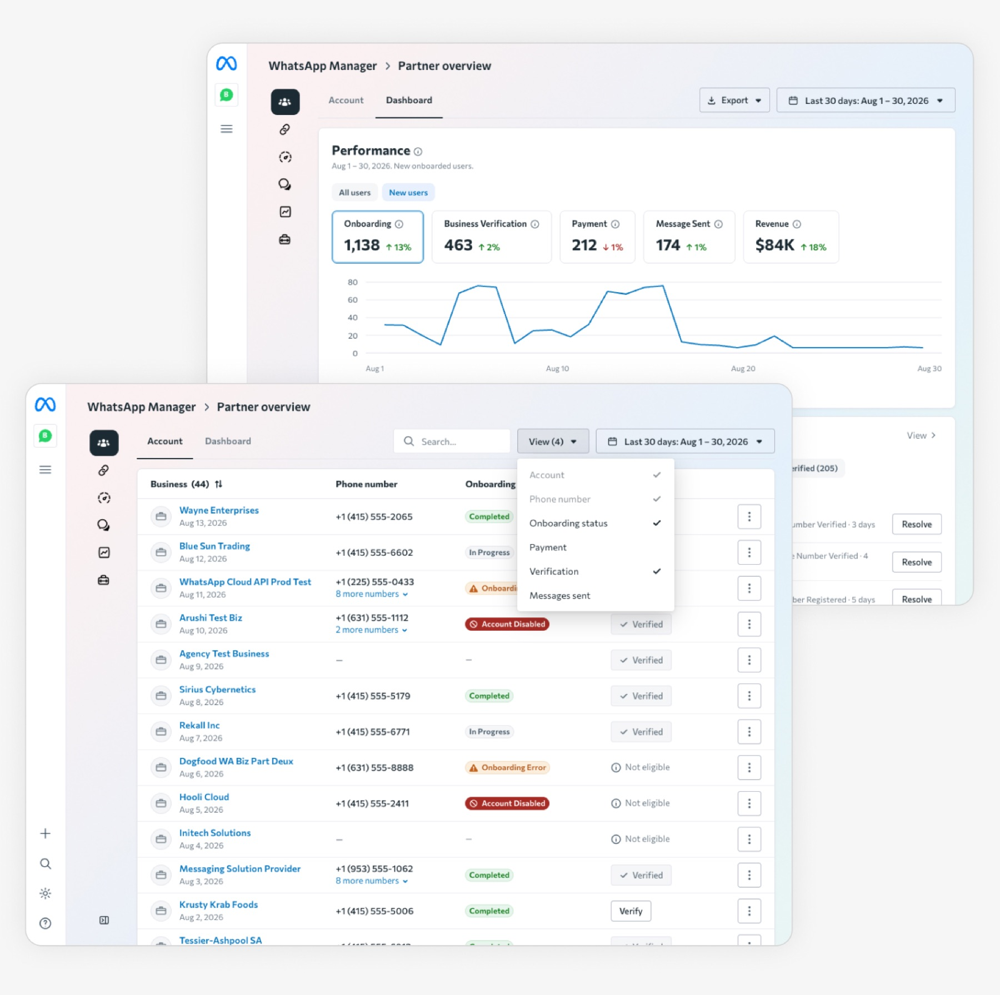
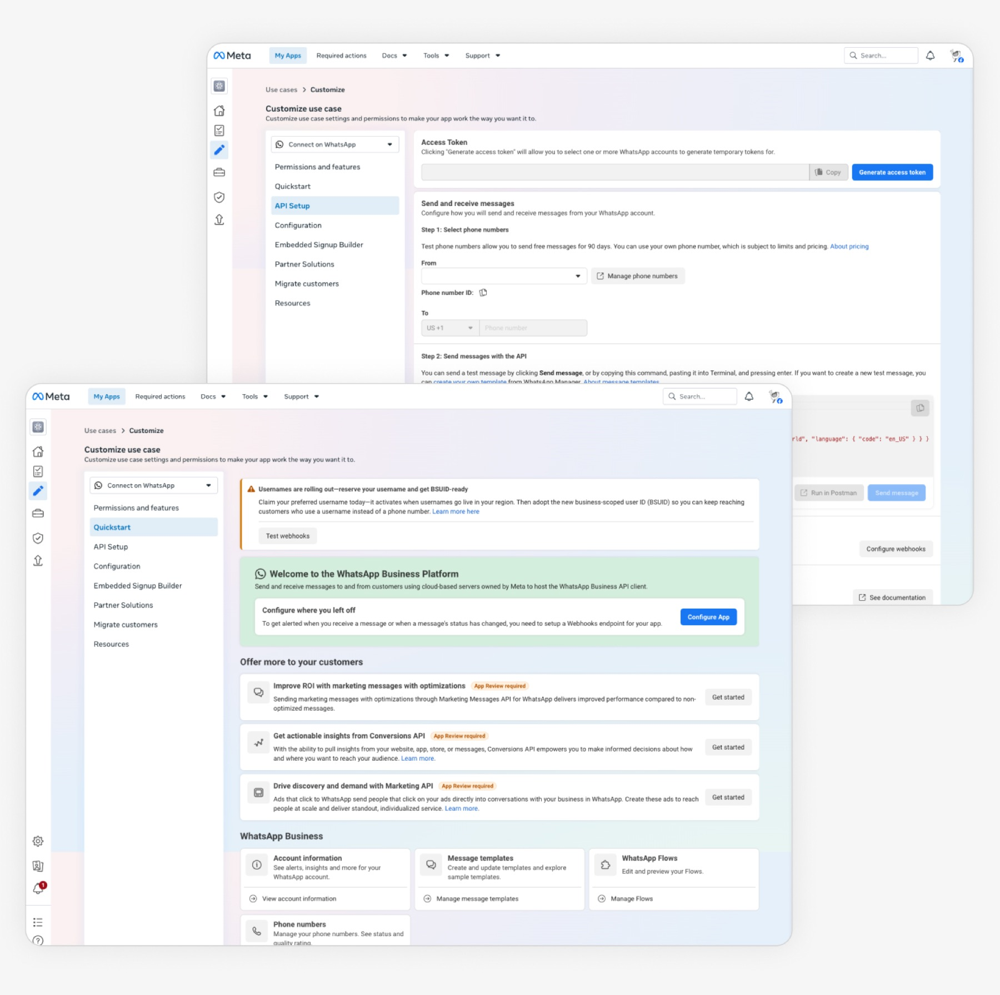
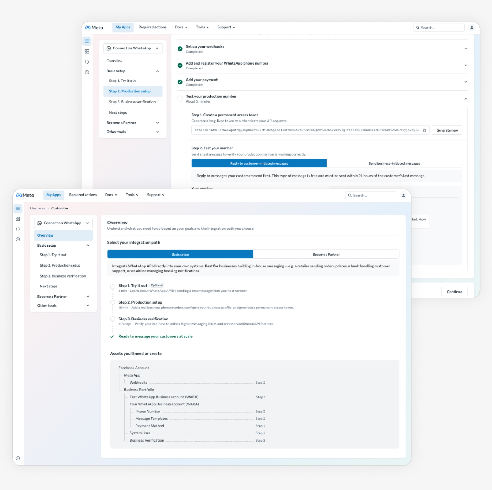

Problems
WhatsApp paid adoption on partner platforms regressed from 11% to 9% despite 10+ launches in 2024 — a large, stalled revenue opportunity.
Solutions
Defined a Day 1 adoption framework — 4 sequenced tasks that get businesses to value fast — and scaled it across 3 products: a guided activation flow, a partner account tool, and a developer portal.
My Role
- Led as PM & designer with Eng, UXR, and Data Science
- Partnered across 5 teams; secured leadership backing
- Defined the framework, 2 MVPs, roadmap, and metrics
- 40% guidance usage (goal 5%)
- +19.7% revenue lift in A/B test (goal >0%)
- ~$43M/year, est. ~$250M by 2030
Context
WhatsApp Business and Revenue Driver
WhatsApp Business is a fast-growing ecosystem — businesses on WhatsApp grew +30% YoY, reaching $1.5B in annual revenue. But 80% of paid messaging revenue flows through partner platforms like Twilio, AiSensy, and Manychat, where we owned little of the experience.
Despite 10+ launches in 2024, paid adoption regressed from 11% to 9%. My team was assigned to find opportunities to grow paid adoption on partner platforms.



Discover Problems
Study 1 — Journey mapping with Eng and 5 teams
I led journey mapping across the ecosystem, pulling data and findings from 5 teams and auditing 10 partner platforms with Eng. I found 16 tools spread across teams, each tracking its own adoption goal.
Takeaway: our data was fragmented and tool-focused. It showed what businesses used — not why they paid or dropped off.

Study 2 — User study on convert vs. drop-off
I pushed for a user study and partnered with UXR on the approach: 12 businesses, 2 top markets, a 30-day journey. We mapped the successful and unsuccessful paths to uncover why users convert to paid vs. drop off.
Takeaway: on Day 1, two use cases — service and marketing message — drive paid adoption, but users get blocked by 2 account tasks (account creation, business verification) and often try the wrong tools first.


Clarify Ambiguity
Research findings
Users didn’t need more or better tools — they needed guidance to get past blockers and try the right tools first.
The Day 1 adoption framework
I combined learnings from the successful and unsuccessful paths into one sequenced path, ordered by user needs and dependencies. It aligned every stakeholder — businesses got a clear setup path, partners grew their clients, teams got clear priorities, and Meta grew revenue.

Shape Solutions
Defined 2 MVPs
To validate whether the framework lifts paid adoption, I scoped two MVPs — a guided flow for businesses to complete the 4 tasks, and an account table for partners to track and support them.

Alignment
Not everyone agreed at first, so I took it to leadership forums — securing lead backing to bring the PM and 5 teams on board.

The Day 1 adoption guide


Before — Businesses were overwhelmed by tools with no linear guidance. They tried the wrong tools first or got blocked by account issues.


After — Businesses completed 4 key tasks on Day 1 with a linear guide. They tried the right tools, found value, and converted to paid.
Dynamic status & action items
Introduced dynamic status and action items to support account issues.

Page design
Introduced new patterns for a time-sensitive, sequential journey.

Speed & scale
Built on Meta’s surface to ship fast and stay easy to scale.

Entry points
Connected the guide to 4 entry points and tracked conversion.

Measurement
| Ship goalswhat had to be true to launch | Learning goalswhat we wanted to understand |
|---|---|
|
|
Validated with a 50/50 A/B test (test vs. control) across entry points.
Impact & Learning
Impact — exceeded goals + funnel lift
| Metric | Result | Goal |
|---|---|---|
| Guidance usage | 40% | 5% |
| Revenue lift (A/B test) | +19.7% | >0% |
| Paid adoption | 9% | — |
| Meta incremental revenue | +0.015% (~$43M/yr) | — |
We launched to 100% of users and continued to scale it.
Learnings
Correlation ≠ causation. I used first principles to find the real driver: businesses convert when they know the use cases and can run a quick test — not simply because they use more tools. That’s why 10+ launches in 2024 failed to move the needle.
Different growth strategies for different systems and funnel stages. A Day-1 adoption guide lifts paid adoption 9–20% for first-tool adoption and complex, third-party setups; targeted upsell + defaults drives 3× higher adoption (>50%) for retention and returning users on first-party tools.
A new bet needs cross-team alignment. Building a journey map with 5 teams created shared empathy; answering competing hypotheses with a user study built conviction; and presenting at leadership forums and roadmap share-outs secured VP + eng-director backing and buy-in across teams.
Scale
With the framework validated on the guide, I scaled it across two more products — for partners and developers.
Partner account tool · 800+ partners


Before — Partners could track only 1 task. To fix onboarding issues, they had to get on a client call or escalate to Meta support.


After — Partners could track and support all 4 tasks — unblocking clients on their own, from onboarding to first spend.
Developer portal


Before — Developers were confused and overloaded with information. Only 3.5% completed API setup.


After — Developers had a clear setup path and knew what to do next. The Day 1 framework helped them focus on 4 tasks, and completion tripled.
END ###